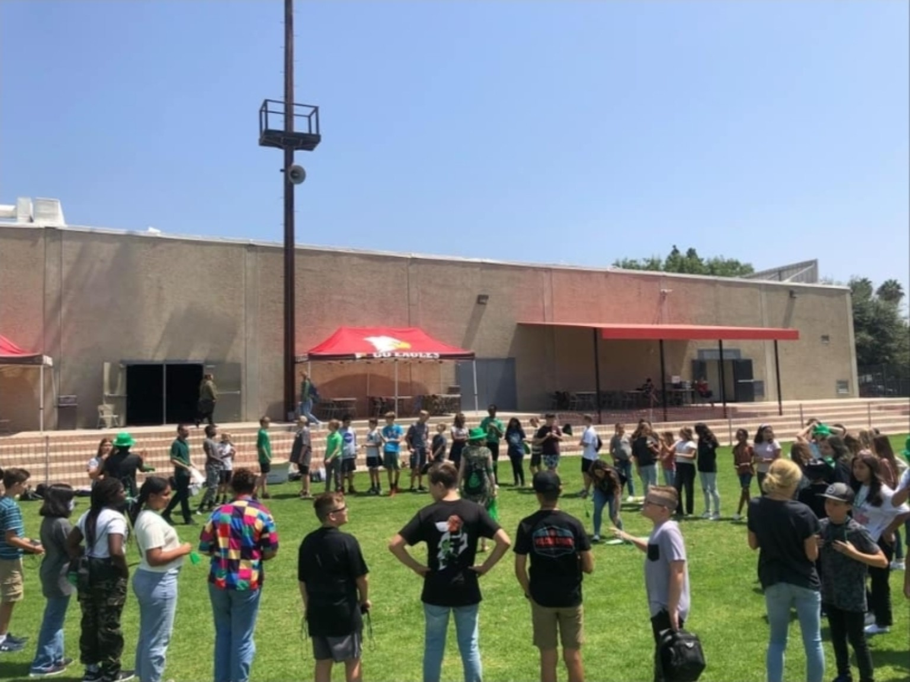
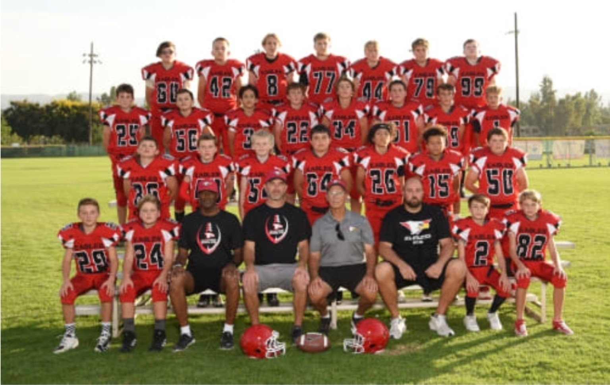
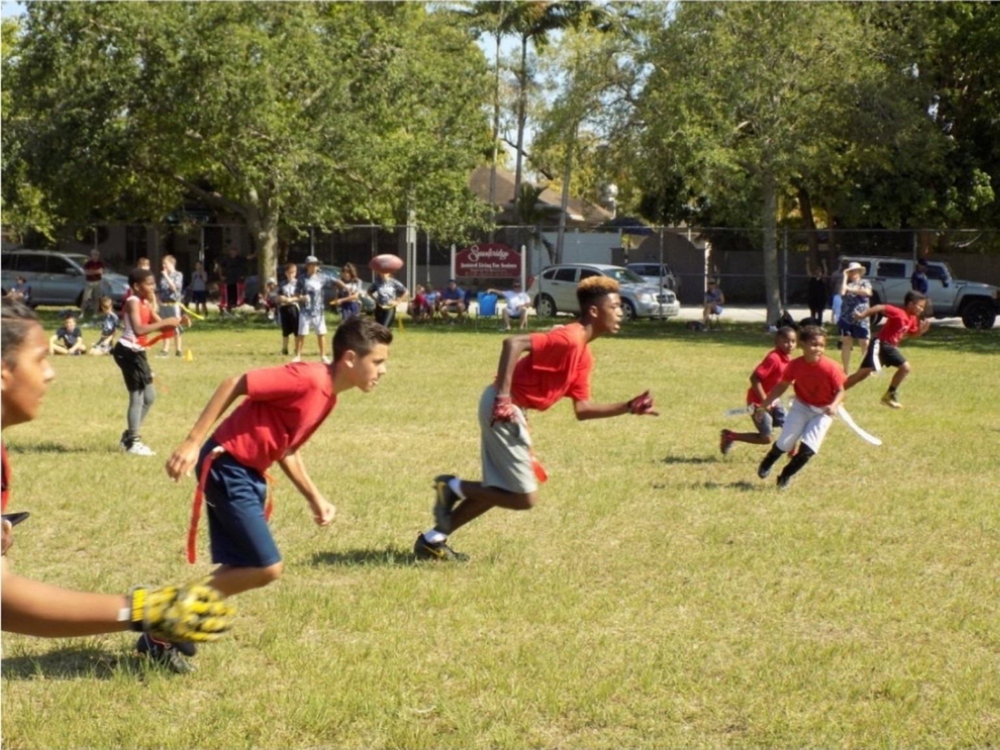
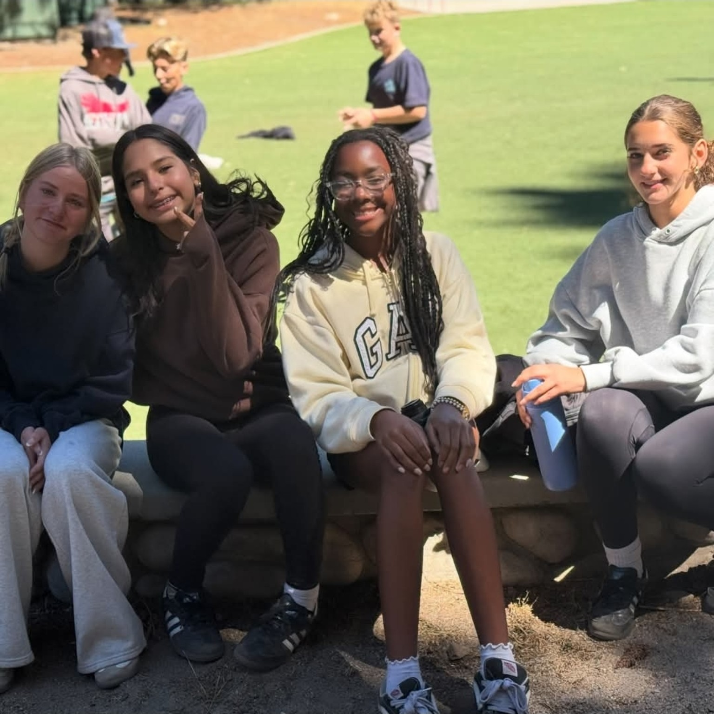
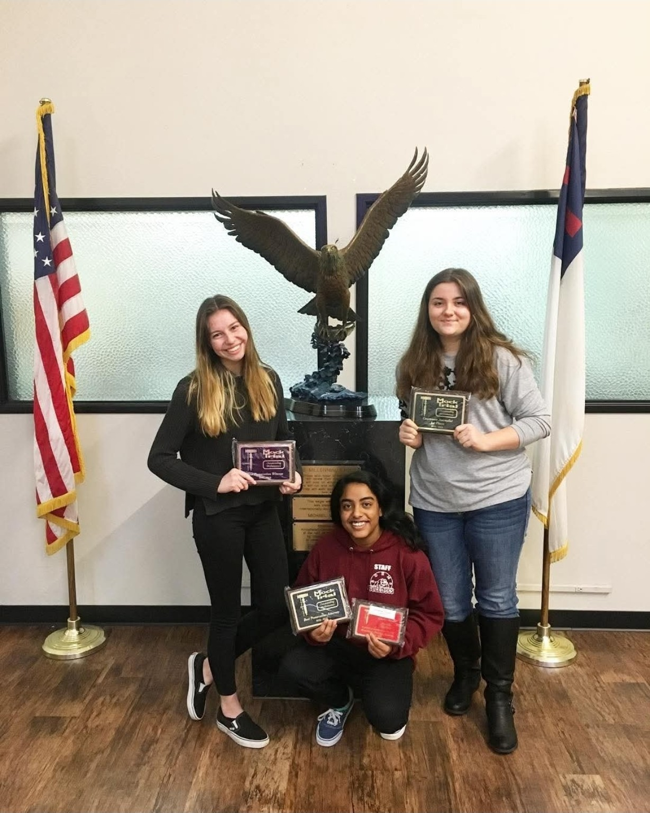
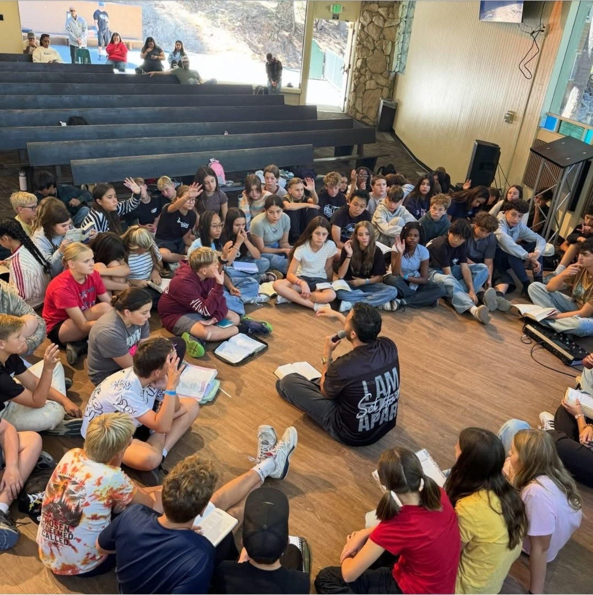
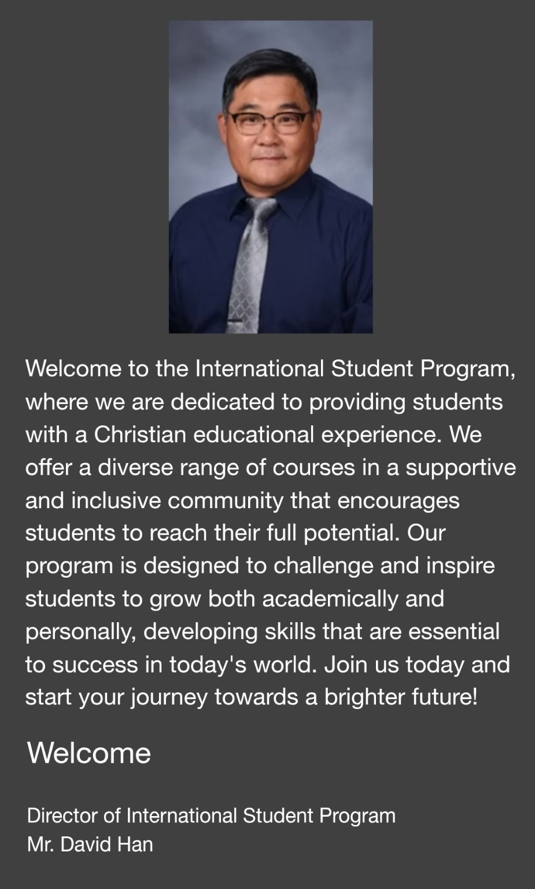

Go deeper in your learning
Explore AP and Honors courses alongside electives in programming, engineering, and entrepreneurship.
Explore academics ↗CALIFORNIA, REDLANDS · INTERNATIONAL COMMUNITY
Where different cultures become friendships,
and learning rooted in faith opens new possibilities.
Begin your story with GVL in Redlands.
A PLACE TO BELONG
A new beginning in a new country.
A journey we take together.
GVL (Global Vision Leadership) is a community connected with Arrowhead Christian Academy, the high school of Redlands Christian Schools. Students from different backgrounds share their cultures and grow together in Christian faith.
Respect for diversity, a desire to understand one another, and the courage to make a positive difference: these are the values GVL holds close.
Official international student program information ↗Respect diverse cultures and ideas while discovering perspectives that reach beyond the classroom.
Discover your potential within a Christian community and explore your direction in learning and life.
Through everyday kindness and collaboration, develop the heart of a leader who serves others.
MEET THE SCHOOL · GRADES 9–12
Arrowhead Christian Academy Upper School serves grades 9–12 within Redlands Christian Schools in Redlands, California. Its Christian worldview connects academic learning with character development.
Explore AP and Honors courses alongside electives in programming, engineering, and entrepreneurship.
Explore academics ↗Academic Services provides academic, career, and personal/social guidance. Eligible courses offer college credit through Colorado Christian University; transfer acceptance depends on the receiving university.
Academic support ↗Five optional tracks cover STEM, exercise science, visual and performing arts, journalism, and global studies. Advanced coursework, practical experience, and a portfolio build focused exploration, with completion recognized at graduation.
Discover the tracks ↗Bible classes, weekly chapel, and retreats complement opportunities in art, music, theater, tennis, golf, and swimming.
Explore school life ↗Based on official school information reviewed September 2026. Courses and activities may vary each year; confirm eligibility with the school.
LEARN. CONNECT. GROW.
The international student program at Redlands Christian Schools
supports students in their learning and everyday lives.

The school’s ESL program and student support help students adjust to a new learning environment and take on academic challenges.
Explore interests and connect with friends through school activities such as band, choir, sports, yearbook, and service clubs.
School-connected Christian host families offer opportunities to share everyday life and experience a new culture.
Please contact the international student program for participation requirements and homestay arrangements.

Working toward a shared goal brings us together as a team.

Friendships grow through the everyday joy of playing and spending time together.
THE DAYS THAT STAY WITH YOU
Laughter with friends. The thrill of a challenge.
Time to connect and share.

Different stories come together to become shared memories.

Pursuing what we love and celebrating one another’s growth.

Asking questions and listening closely,
we grow a little closer to one another.
IMAGINED STUDENT STORIES
Fictional interviews · Illustrative stories
These characters and responses were created to imagine student life.
They are not real student testimonials or statements by anyone pictured.
Q. What is your favorite part of the day?
Talking with my friends over lunch. At first, I felt shy about speaking English, but I found friends who really listened. Now I wake up wondering what we’ll talk about that day. I truly love coming to this school.
You don’t have to speak perfectly from the start. Try a smile and a simple hello. That little hello was the beginning of a friendship for me!
Q. How have you changed at school?
I used to avoid presentations because I was afraid of making mistakes. But my teachers wanted to hear my ideas, and my friends encouraged me. Little by little, I started raising my hand. Classes and activities became more fun the more I joined in. At the end of each day, I feel I’ve learned something new.
Laughing and chatting with my friends after a presentation. It wasn’t perfect, but I was so happy to have taken a step forward.
Q. What makes this school special to you?
Some days we laugh together; other days we share what’s on our minds. Talking about faith and praying for one another brings me peace. Alongside my studies, I’m learning how to care for others. I’m grateful for good friends and a school I enjoy coming to.
I’d like to reach out to someone new and invite them to join us. I want another student to feel the same warmth that I felt.
OUR MISSION
Respecting our differences and discovering the value in each culture.
Connecting faith and community as we grow together.
This is the vision at the heart of GVL.

A WELCOME FROM OUR DIRECTOR
Welcome to the International Student Program, where we are dedicated to providing students with a Christian educational experience. We offer a diverse range of courses in a supportive and inclusive community that encourages students to reach their full potential.
Our program is designed to challenge and inspire students to grow both academically and personally, developing skills that are essential to success in today’s world. Join us today and start your journey towards a brighter future!
Mr. David Han
Director of International Student Program
Welcome message supplied for this page
YOUR NEXT CHAPTER STARTS HERE
From the application process to everyday school life,
start a conversation with the international student program.
Director of International Student Program
dhan@redlandschristian.org ↗